Let
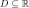
. A point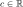
is an accumulation point of if every interval
if every interval 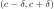
with contains a point of other than
contains a point of other than  .
.
Let  and let be an accumulation point of
. One writes
and let be an accumulation point of
. One writes
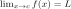
if for every there is such that
there is such that  for every
for every
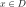
with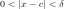
.
Let and let be an accumulation point of
. Then if and only if
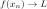
for every sequence in
in
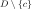
with .
.
Suppose the limit is  and let with
and let with
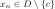
. Given, take  from the definition and then
from the definition and then  with
with 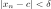
for ; since
; since 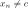
, this gives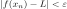
for.
Conversely, suppose the limit is not . Then some
admits no , so for every  the choice
the choice
 produces
produces
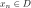
with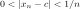
and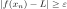
. This sequence lies in and converges to, while
 does not converge to .
does not converge to .
The second half is the useful one in practice: to show a limit does not
exist, produce two sequences approaching along which  tends to
different values.
tends to
different values.